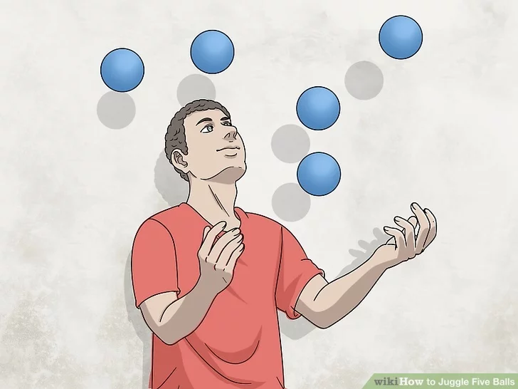
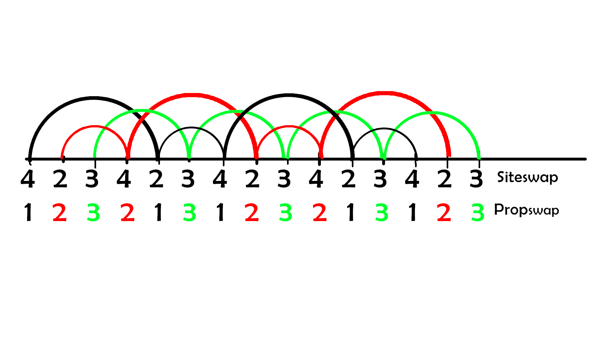
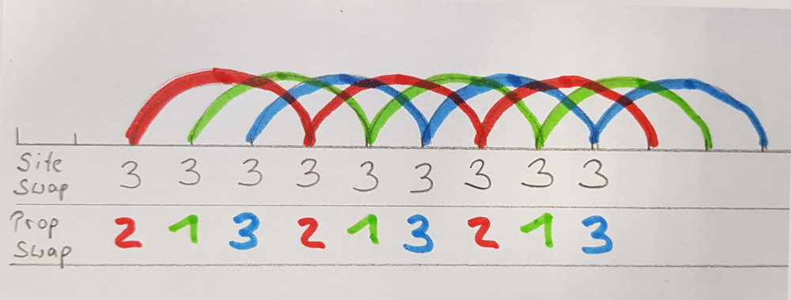
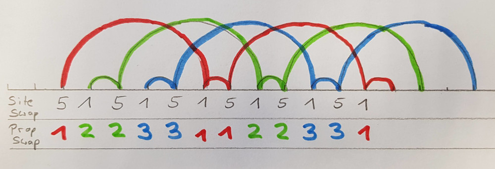
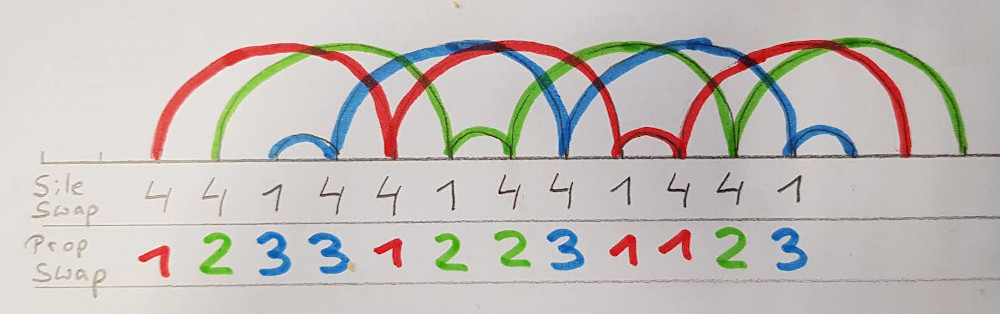
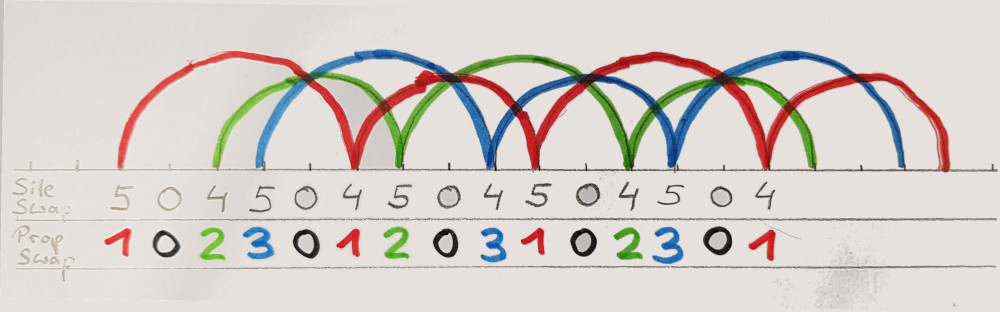
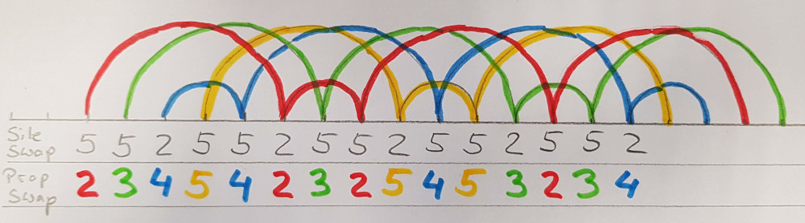
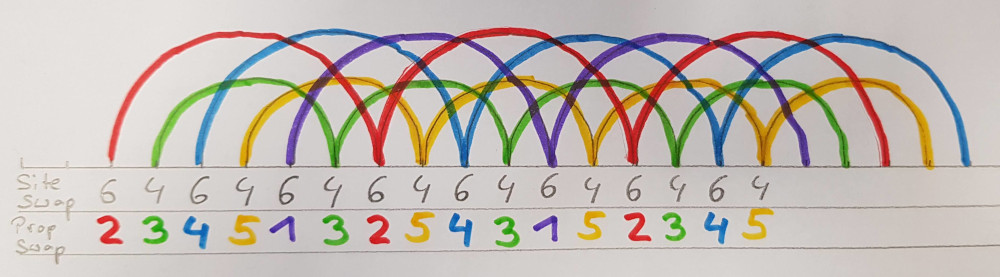
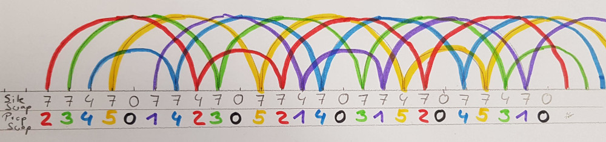

<!DOCTYPE html>
<html lang="en">
  <head>
    <meta charset="utf-8" />
    <meta name="viewport" content="width=device-width, initial-scale=1.0, maximum-scale=1.0, user-scalable=no" />

    <title></title>
    <link rel="stylesheet" href="dist/reveal.css" />
    <link rel="stylesheet" href="dist/theme/white.css" id="theme" />
    <link rel="stylesheet" href="plugin/highlight/zenburn.css" />
	<link rel="stylesheet" href="css/layout.css" />
	<link rel="stylesheet" href="plugin/customcontrols/style.css">


    <script defer src="dist/fontawesome/all.min.js"></script>

	<script type="text/javascript">
		var forgetPop = true;
		function onPopState(event) {
			if(forgetPop){
				forgetPop = false;
			} else {
				parent.postMessage(event.target.location.href, "app://obsidian.md");
			}
        }
		window.onpopstate = onPopState;
		window.onmessage = event => {
			if(event.data == "reload"){
				window.document.location.reload();
			}
			forgetPop = true;
		}

		function fitElements(){
			const itemsToFit = document.getElementsByClassName('fitText');
			for (const item in itemsToFit) {
				if (Object.hasOwnProperty.call(itemsToFit, item)) {
					var element = itemsToFit[item];
					fitElement(element,1, 1000);
					element.classList.remove('fitText');
				}
			}
		}

		function fitElement(element, start, end){

			let size = (end + start) / 2;
			element.style.fontSize = `${size}px`;

			if(Math.abs(start - end) < 1){
				while(element.scrollHeight > element.offsetHeight){
					size--;
					element.style.fontSize = `${size}px`;
				}
				return;
			}

			if(element.scrollHeight > element.offsetHeight){
				fitElement(element, start, size);
			} else {
				fitElement(element, size, end);
			}		
		}


		document.onreadystatechange = () => {
			fitElements();
			if (document.readyState === 'complete') {
				if (window.location.href.indexOf("?export") != -1){
					parent.postMessage(event.target.location.href, "app://obsidian.md");
				}
				if (window.location.href.indexOf("print-pdf") != -1){
					let stateCheck = setInterval(() => {
						clearInterval(stateCheck);
						window.print();
					}, 250);
				}
			}
	};


        </script>
  </head>
  <body>
    <div class="reveal">
      <div class="slides"><section  data-markdown><script type="text/template">

<!-- .slide: class="drop" data-background-image="Bilder/blue-abstract-gradient-wave-wallpaper.jpg" -->
<p style="line-height: 0" class="reset-paragraph image-paragraph"></img></p>


<div class="has-light-background reset-margin" style="background-color: white; padding: 30px; box-sizing: border-box; position: absolute; left: 806.4px; top: 576px; height: 420px; min-height: 420px; width: 1094.3999999999999px; display: flex; flex-direction: column; align-items: flex-start; justify-content: space-evenly" align="left">

# SiteSwap & PropSwap - can they be friends?<!-- .element: style="font-size: 120px" -->
</div>
<div class="has-light-background reset-margin flex-even" style="background-color: #FFFFFFFF; position: absolute; left: 0px; top: 1080px; height: 120px; min-height: 120px; width: 1920px; display: flex; flex-direction: row; align-items: center; justify-content: space-evenly" >

# Marc Bielert<!-- .element: style="font-size: 40px" -->
# EigenArts Halle<!-- .element: style="font-size: 40px" -->
</div>
</script></section><section  data-markdown><script type="text/template">
<!-- .slide: data-background-image="Bilder/blue-abstract-gradient-wave-wallpaper.jpg" -->
# What are SiteSwaps

- Developed in 1991 by Bengt Magnussen and Bruce Tiemann, among others.
- describes the chronological sequence and temporal relation of events
 (i.e. after how many beats an object is thrown again)

- can use mathematical algorithms to
	- check patterns for validity
	- create new patterns from old ones
	- increase or decrease the number of objects in a valid pattern
</script></section><section  data-markdown><script type="text/template">
<!-- .slide: data-background-image="Bilder/blue-abstract-gradient-wave-wallpaper.jpg" -->
# What are PropSwaps

- Developed in 2016 by Craig Quat
- Describes the place of interaction with objects as well as the sequence of these interactions
</script></section><section  data-markdown><script type="text/template">
<!-- .slide: data-background-image="Bilder/blue-abstract-gradient-wave-wallpaper.jpg" -->
# Categorization of SiteSwaps with Process Formations<!-- .element: style="font-size: 60px" -->

- A special feature of Craig's theory is the classification of patterns with the help of the so-called "Process Formations
- these give an indication of the difficulty of patterns (in terms of the necessary capacity to process them)
</script></section><section  data-markdown><script type="text/template">
<!-- .slide: data-background-image="Bilder/blue-abstract-gradient-wave-wallpaper.jpg" -->
## Associated

- (44) - (fountain) : synchro lateral 
- 4 : asyncro lateral  
- (4x4x) : synchro bilateral 
- 552 (4 Ball cascade) : asynchro bilateral 
</script></section><section  data-markdown><script type="text/template">
<!-- .slide: data-background-image="Bilder/blue-abstract-gradient-wave-wallpaper.jpg" -->
## Disassociated

- (6,4) : syncro lateral
- 64 asyncro lateral
- 4x2x  (shower) syncro bilateral
- 51 (shower) asyncro bilateralal
</script></section><section  data-markdown><script type="text/template">
<!-- .slide: data-background-image="Bilder/blue-abstract-gradient-wave-wallpaper.jpg" -->
# How can we translate from one to the other
</script></section><section  data-markdown><script type="text/template">
<!-- .slide: data-background-image="Bilder/blue-abstract-gradient-wave-wallpaper.jpg" -->
## Siteswap 423

<p style="line-height: 0" class="reset-paragraph image-paragraph"></img></p>


- lets start with Siteswap 423
- We track the order of the three objects: Red, Green and Black
- the pattern repeats only after 6 cycles
- Now we assign a path/lane to each object according to PropSwap notation
- 1 2 3 2 1 3  --> the last 3 in the pattern is played crosswise to stay in the right-left rhythm
</script></section><section  data-markdown><script type="text/template">
<!-- .slide: data-background-image="Bilder/blue-abstract-gradient-wave-wallpaper.jpg" -->
Siteswap | Hand | Objekt | PropSwap
---|---|---|---
4|R|Black|1
2|L|Red|2
3|R|Green|3
4|L|Red|2
2|R|Black|1
3|L|Green|3

<p style="line-height: 0" class="reset-paragraph image-paragraph"></img></p>

</script></section><section  data-markdown><script type="text/template">
<!-- .slide: data-background-image="Bilder/blue-abstract-gradient-wave-wallpaper.jpg" -->
- PropSwap Pattern: **1 2 3 2 1 3**
- To follow the rules of Propswap we make a cyclic-shift
- **2 3 2 1 3 1**
- and have a functional prop swap pattern.
</script></section><section  data-markdown><script type="text/template">
<!-- .slide: data-background-image="Bilder/blue-abstract-gradient-wave-wallpaper.jpg" -->
### Siteswap 3 (Kaskade)

Siteswap | Hand | Objekt | PropSwap
---|---|---|---
3|R|Rot|2
3|L|Grün|1
3|R|Blau|3
3|L|Rot|2
3|R|Grün|1
3|L|Blau|3

<p style="line-height: 0" class="reset-paragraph image-paragraph"></img></p>


Resulting PropSwap Pattern: 2 1 3 *
</script></section><section  data-markdown><script type="text/template">
<!-- .slide: data-background-image="Bilder/blue-abstract-gradient-wave-wallpaper.jpg" -->
# SiteSwap Patterns with a "1"
</script></section><section  data-markdown><script type="text/template">
<!-- .slide: data-background-image="Bilder/blue-abstract-gradient-wave-wallpaper.jpg" -->
### Siteswap 51 (Shower)

Siteswap | Hand | Objekt | PropSwap
---|---|---|---
5|R|Red|1
1|L|Green|2
5|R|Green |2
1|L|Blue|3
5|R|Blue|3
1|L|Red|1

<p style="line-height: 0" class="reset-paragraph image-paragraph"></img></p>

PropSwap: 2 2 3 3 1 1
</script></section><section  data-markdown><script type="text/template">
<!-- .slide: data-background-image="Bilder/blue-abstract-gradient-wave-wallpaper.jpg" -->
### Siteswap 441

Siteswap | Hand | Objekt | PropSwap
---|---|---|---
4|R|Red|1
4|L|Green|2
1|R|Blue |3
4|L|Blue|3
4|R|Red|1
1|L|Green|2
4|R|Green|2
4|L|Blue|3
1|R|Red|1

<p style="line-height: 0" class="reset-paragraph image-paragraph"></img></p>

PropSwap : 2 3 3 1 2 2 3 1 1 *
</script></section><section  data-markdown><script type="text/template">
<!-- .slide: data-background-image="Bilder/blue-abstract-gradient-wave-wallpaper.jpg" -->
# Issues with SiteSwap "1"

- when using a siteswap 1, the resulting propswap pattern, while used on a juggleboard with 2 people, becomes "slow" - i have to wait a lot on the ball returning to "immidiatly" use it again
- one way to "solve" this is to just touch it first with one hand and roll with the second
- technically this is "not correct", as nothing does indicate a different behaviour 
- personally, patterns that use the same row/ball right after another doesnt feel exciting or interesting
</script></section><section  data-markdown><script type="text/template">
<!-- .slide: data-background-image="Bilder/blue-abstract-gradient-wave-wallpaper.jpg" -->
# Patterns with a gap

Siteswap patterns with a gap (0) in it creates interesting PropSwap Patterns.
The 0 can be used to perform other actions and allows for complex sequencing patterns.
</script></section><section  data-markdown><script type="text/template">
<!-- .slide: data-background-image="Bilder/blue-abstract-gradient-wave-wallpaper.jpg" -->
## Siteswap 504


Siteswap | Hand | Objekt | PropSwap
---|---|---|---
5|R|Red|1
0|L|Empty |0
4|R|Green | 2
5|L|Blue| 3
0|R|Empty|0
4|L|Red|1
5|R|Green|2
0|L|Empty|0
4|R|Blue|3

<p style="line-height: 0" class="reset-paragraph image-paragraph"></img></p>


- because we dont start with 0 or 1 in PropSwap, we cyclic-shift the pattern
- PropSwap: 2 3 0 1 2 0 3 1 0 *
</script></section><section  data-markdown><script type="text/template">
<!-- .slide: data-background-image="Bilder/blue-abstract-gradient-wave-wallpaper.jpg" -->
# Complex Patterns

> complex patterns in terms of lenght that result from most siteswaps are actually a good way for experienced jugglers to increase their sequencing capacity (it takes quite some concentration and practice because patterns are long and not too easy to remember)
 </script></section><section  data-markdown><script type="text/template">
<!-- .slide: data-background-image="Bilder/blue-abstract-gradient-wave-wallpaper.jpg" -->
### Siteswap 552

Siteswap | Hand | Objekt | PropSwap
---|---|---|---
5|R|Red|2
5|L|Green |3
2|R|Blue | 4
5|L|Yellow| 5
5|R|Blue|4
2|L|Red|2
5|R|Green|3
5|L|Red|2
2|R|Yellow|5
5|R|Blue|4
5|L|Yellow|5
2|R|Green|3
</script></section><section  data-markdown><script type="text/template"><p style="line-height: 0" class="reset-paragraph image-paragraph"></img></p>

<!-- .slide: data-background-image="Bilder/blue-abstract-gradient-wave-wallpaper.jpg" -->
> PropSwap:  2  3  4 5  4  2  3  2  5 4 5 3
</script></section><section  data-markdown><script type="text/template">
<!-- .slide: data-background-image="Bilder/blue-abstract-gradient-wave-wallpaper.jpg" -->
### Siteswap 64

<p style="line-height: 0" class="reset-paragraph image-paragraph"></img></p>

> PropSwap : 2 3 4 5 1 3 2 5 4 3 1 5

- this is actually a nice and easy one, one hand doing 3 lanes alternativly, the other 2
</script></section><section  data-markdown><script type="text/template">
<!-- .slide: data-background-image="Bilder/blue-abstract-gradient-wave-wallpaper.jpg" -->
## Beauty beyond words =)

- Start with 6 Ball SiteSwap Pattern: 7 7 4 7 5 
- we eleminate the 5 (and go to 5 ball )
- 7 7 4 7 0
- we construct the propswap

<p style="line-height: 0" class="reset-paragraph image-paragraph"></img></p>


> PropSwap: 2 3 4 5 0 1 4 2 3 0 5 2 1 4 0 3 1 5 2 0 4 5 3 1 0 *
</script></section><section  data-markdown><script type="text/template">
<!-- .slide: data-background-image="Bilder/blue-abstract-gradient-wave-wallpaper.jpg" -->
# Converting from PropSwap to SiteSwap

- we wont find new patterns
- it might be interesting to see similarities

>Prop Swap | Site Swap
>--- | ---
>2345 | 4
>23412315 | 44834458
>12345* | 5
</script></section><section  data-markdown><script type="text/template">
<!-- .slide: data-background-image="Bilder/blue-abstract-gradient-wave-wallpaper.jpg" -->
# Final thoughts

- once patterns become to complex, its more about memorization
- there are interesting patterns to be found, especially within the realm of using "0"
- there is still much more to explore (passing patterns, prechac variations etc...)
- personally i would say - yes they can be friends 😜


</script></section></div>
    </div>

    <script src="dist/reveal.js"></script>

    <script src="plugin/markdown/markdown.js"></script>
    <script src="plugin/highlight/highlight.js"></script>
    <script src="plugin/zoom/zoom.js"></script>
    <script src="plugin/notes/notes.js"></script>
    <script src="plugin/math/math.js"></script>
	<script src="plugin/mermaid/mermaid.js"></script>
	<script src="plugin/chart/chart.min.js"></script>
	<script src="plugin/chart/plugin.js"></script>
	<script src="plugin/menu/menu.js"></script>
	<script src="plugin/customcontrols/plugin.js"></script>

    <script>
      function extend() {
        var target = {};
        for (var i = 0; i < arguments.length; i++) {
          var source = arguments[i];
          for (var key in source) {
            if (source.hasOwnProperty(key)) {
              target[key] = source[key];
            }
          }
        }
        return target;
      }

	  function isLight(color) {
		let hex = color.replace('#', '');

		// convert #fff => #ffffff
		if(hex.length == 3){
			hex = `${hex[0]}${hex[0]}${hex[1]}${hex[1]}${hex[2]}${hex[2]}`;
		}

		const c_r = parseInt(hex.substr(0, 2), 16);
		const c_g = parseInt(hex.substr(2, 2), 16);
		const c_b = parseInt(hex.substr(4, 2), 16);
		const brightness = ((c_r * 299) + (c_g * 587) + (c_b * 114)) / 1000;
		return brightness > 155;
	}

	var bgColor = getComputedStyle(document.documentElement).getPropertyValue('--r-background-color').trim();

	if(isLight(bgColor)){
		document.body.classList.add('has-light-background');
	} else {
		document.body.classList.add('has-dark-background');
	}

      // default options to init reveal.js
      var defaultOptions = {
        controls: true,
        progress: true,
        history: true,
        center: true,
        transition: 'default', // none/fade/slide/convex/concave/zoom
        plugins: [
          RevealMarkdown,
          RevealHighlight,
          RevealZoom,
          RevealNotes,
          RevealMath.MathJax3,
		  RevealMermaid,
		  RevealChart,
		  RevealCustomControls,
		  RevealMenu,
        ],

		mathjax3: {
			mathjax: 'plugin/math/mathjax/tex-mml-chtml.js',
		},

		customcontrols: {
			controls: [
			]
		},
		menu: {
			loadIcons: false
		}
      };

      // options from URL query string
      var queryOptions = Reveal().getQueryHash() || {};

      var options = extend(defaultOptions, {"width":1920,"height":1200,"margin":0,"controls":true,"controlsTutorial":true,"progress":true,"slideNumber":true,"navigationMode":"default","transition":"slide","transitionSpeed":"slow"}, queryOptions);
    </script>

    <script>
      Reveal.initialize(options);
    </script>
  </body>
</html>
